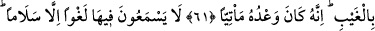
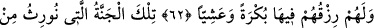
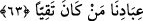

MUTTAKÎLERE VERİLECEK
CENNETLER
59. Onlardan sonra yerlerine öyle bir nesil geldi ki, onlar namazı zâyi ettiler,
şehvetlerine uydular. Onlar kötülük bulacaklardır.
60. Ancak tevbe eden, inanıp iyi iş yapanlar müstesnâ. Onlar cennete girecekler
ve hiç haksızlığa uğratılmayacaklardır.
61. Rahman’ın kullarına, gıyâben vaad ettiği Adn cennetleri(ne gireceklerdir).
Şüphesiz O’nun vaadi yerine gelecektir.
62. Orada boş söz değil, yalnız selam işitirler. Orada sabah akşam rızıkları da
hazırdır.
63. İşte kullarımızdan muttakîlere vereceğimiz cennet budur.
“Onlardan sonra yerlerine öyle bir nesil geldi ki” yani adı geçen peygamberlerden
sonra çocuklarından kötü kimseler geldi. Arkadan gelen hayırlı nesle ‘halef’, kötü nesle
ise ‘half’ denir.
Celâleyn’de şöyle denir: “Bu peygamberlerden sonra gelen kötü topluluk yahûdî,
hristiyan ve mecûsîlerdir.”
Bir hadîste şöyle buyrulmuştur: “Benden önce Allâh’ın gönderdiği her peygamberin
mutlaka ümmetinden havârîleri ve arkadaşları olmuştur. Bunlar onun sünnetiyle amel
ederler, emirlerini de yerine getirirlerdi. Sonra, bu peygamberlerin ardından öylesi
kötü kimseler zuhûr etti ki, yapmadıklarını söyleyip, kendilerine emredilmeyeni de
yaptılar. Kim onlarla eliyle mücâhede ederse mü’mindir. Kim onlarla diliyle
mücâhede ederse o da mü’mindir. Kim de onlarla kalbiyle mücâhede ederse o da
mü’mindir. Bunun gerisinde artık hardal danesi kadar iman yoktur.”[30]
“Namazı zâyi ettiler” yani namazı terk ettiler ya da vaktini geciktirdiler veya
kıldıktan sonra kovuculuk, gıybet, yalan gibi şeylerle namazın sevâbını zayi ettiler yahut
ona niyetsiz başlayıp huşûsuz bir şekilde kıldılar.